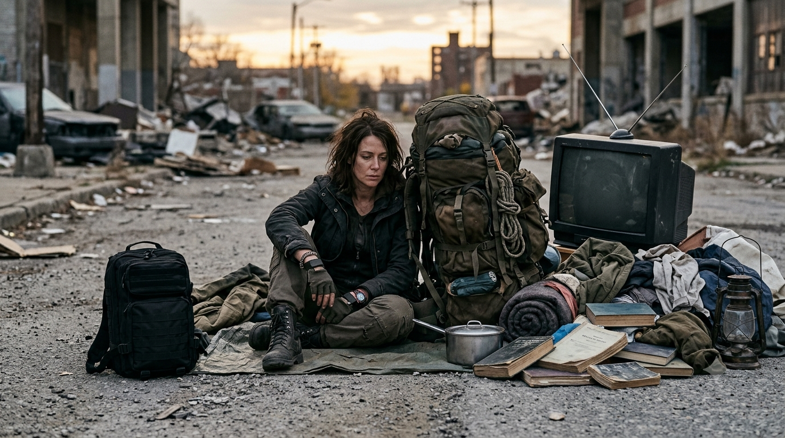
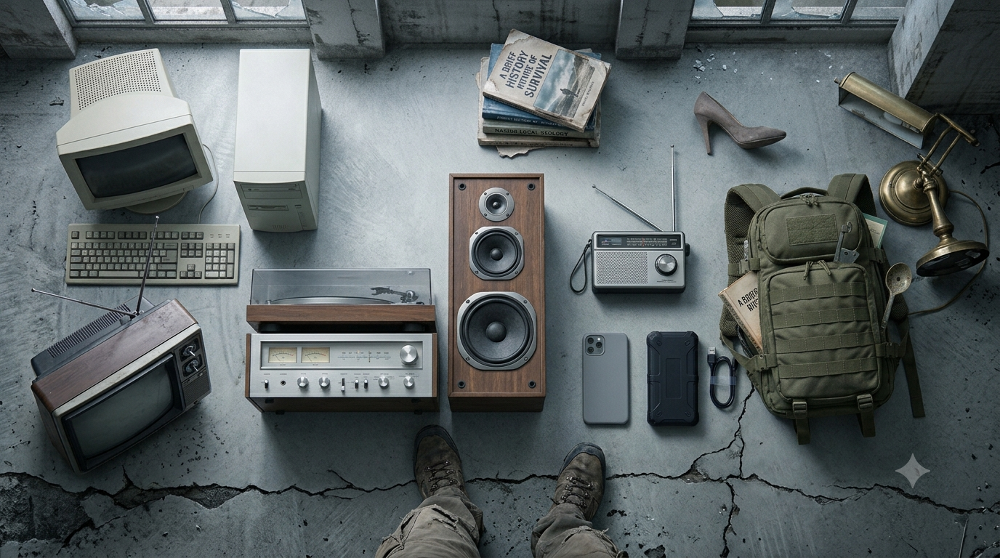
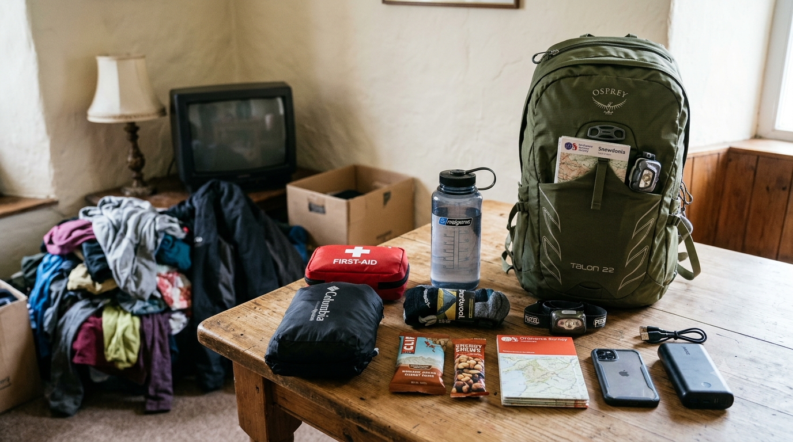

What NOT to Pack for an Apocalypse: Things That Waste Space
When an emergency forces you to leave, a backpack has limited space and your legs have limits. The mistake is filling it with bulky, fragile or low-priority belongings while leaving too little room for essentials.
A useful loadout contains what you are likely to use and can comfortably carry. This guide focuses on evacuation on foot; a vehicle or secure home base can hold larger reserves.
These are not universal rules. Keep equipment required for your health, family, children, pets, climate or specific responsibilities.

- Choose the right kit
- Too much or perishable food
- An unrealistic water load
- Bulky electronics and devices
- Tools, weapons and duplicate gadgets
- Clothing and shelter
- Valuables and household belongings
- Power-hungry appliances
- Medication and personal needs
- Fuel, chemicals and toiletries
- Books and comfort items
- What you must not leave behind
- A simple packing test
- Quick reference
- Final thoughts
1. Pack for the Type of Emergency Kit
A walking go-bag must stay manageable because you carry it yourself. A vehicle kit can include more water, blankets and tools, but the car may become unusable. A home or base kit can hold bulk food, spare bedding and larger equipment.
Do not confuse these plans. Keep a compact bag ready even if you own a vehicle, and do not carry household reserves on your back.
2. Too Much Food — or Food That Will Spoil
Food matters, but a week of bulky tins or ingredients can make a walking bag unmanageable. Choose a realistic amount of compact, calorie-dense food that you already tolerate and can eat with little preparation.
Fresh meat, dairy, leftovers and other foods needing refrigeration are poor choices for a bag that may sit packed or travel without cooling. Eat safe fresh food before leaving when practical; do not assume food is safe after a power cut just because it smells normal.
3. An Unrealistic Water Load
Water is essential, but one litre weighs about one kilogram. Carry enough for the immediate route and conditions, then plan safe refill and treatment options where realistic. Do not carry an impossible load, but do not leave with almost no water because you expect to find some.
Needs rise with heat, exertion, illness and individual circumstances. A filter or treatment method is useful only if it suits the water hazards you may encounter; it does not make every source safe.
4. Bulky Electronics and Too Many Devices
Leave televisions, desktop computers, large speakers, consoles and their accessories behind when travelling on foot. They are heavy, fragile and dependent on electricity or services that may not be available.
A phone is usually worth carrying for offline maps, contacts, information and light. Save important files offline and bring a suitable charging option. A laptop or tablet is conditional: take it only when a specific work, medical or communication need justifies its weight. A small radio may be more useful than a large entertainment system.

5. Huge Toolboxes, Weapons and Duplicate Gadgets
A crowbar, axe, shovel, saw, several knives and a full toolbox can add weight quickly. Carry tools for tasks you realistically expect to perform and know how to do safely. One compact multitool or a specific repair tool may be enough for a walking kit.
The same applies to survival gadgets and weapons. Test equipment before relying on it, keep sensible backups for critical items, and avoid carrying several devices that do the same job. Extra weapons add weight and handling risks; lawful, safe storage and training matter more than quantity.
6. Too Many Clothes or the Wrong Shelter
Do not pack your whole wardrobe. Choose layers for the actual season, route and climate, with suitable rain protection, spare socks and enough dry clothing for the conditions. Heavy or cotton clothing can become uncomfortable when wet and may dry slowly.
A thin emergency sheet may not protect you through a cold, wet night, while a bulky winter sleeping bag may be unnecessary in hot weather. Match shelter and insulation to expected exposure; do not remove essential warmth simply to make the bag lighter.
7. Valuables, Fragile Items and Household Belongings
Carry a sensible emergency cash reserve in useful denominations, plus essential identification and documents. Do not carry all your savings, jewellery or luxury valuables; they add risk without guaranteeing usefulness.
Large photo albums, trophies, collectibles, framed pictures, glass containers, furniture and mattresses belong in a home or vehicle plan, not a backpack. If a small keepsake matters, choose one. Back up irreplaceable photographs and records securely before an emergency if possible.
8. Appliances That Need Constant Power
Electric heaters, cooking appliances, hair dryers, desktop printers and large fans are poor walking-bag choices. They consume more power than small portable batteries can realistically provide or depend on mains electricity.
This does not mean avoiding all electronics. A phone, headlamp, radio or medically necessary device may be essential. Check power requirements and carry a realistic charging plan.
9. Do Not Pack the Entire Medicine Cabinet — or Forget Personal Needs
Do not leave behind prescription medicine, rescue medication, glasses, hearing-aid batteries, mobility aids or other equipment you rely on. Carry essential medication in its labelled packaging when practical and follow its storage instructions.
The waste is random bulk: duplicate remedies, expired products and supplies unrelated to your needs. Build a compact first-aid and personal-medical kit around your household, and include infant formula, menstrual products, disability-related items and pet supplies when needed.

10. Loose Fuel, Leaking Chemicals and Excess Toiletries
Do not put loose petrol, leaking fuel bottles, unlabelled chemicals or badly stored flammables in a backpack. Vapours and leaks can cause fire, poisoning or damage to other supplies. If fuel or hazardous products are genuinely needed, use approved containers and follow product instructions and local rules.
Hygiene supplies matter, but full-size bottles and excessive packaging waste space. Carry the soap, sanitizer, toothbrush, menstrual products, sunscreen and other items you actually use in suitable compact containers.
11. A Whole Library of Books and Comfort Items
Reading, games and familiar objects can support morale, especially for children, but a stack of heavy novels is unnecessary in a walking kit. Choose one small book, cards or a notebook; downloaded books can save space if you have a reliable power plan.
Large pillows, chairs, cookware and other comfort items may be useful at a secure base or in a vehicle. For a backpack, choose compact sleep and comfort equipment that suits the weather and your ability to carry it.
12. Do Not Leave Behind What You Actually Need
A minimalist list should never make you abandon water, medication, sturdy footwear, first aid, weather protection, contact details, a paper map or supplies for children, older relatives, people with disabilities or pets.
Pack for the people who will use the bag, not for an imaginary average survivor. Personal medical and accessibility needs take priority over generic advice about reducing weight.
A Simple Test Before Packing
Lay everything out and ask: Does it solve a real problem? Will it work in the expected weather and conditions? Do I know how to use it? Is there a lighter item that does the same job? What essential supply would I have to remove to make room?
Remove duplicates and unnecessary packaging, check expiry dates, and test the loaded bag on a short walk. If it causes pain, instability or unusual exhaustion, reduce the load or improve the fit. Do not sacrifice essential water, medication or protection just to reach an arbitrary weight.
Quick Reference: Leave It, Reduce It, or Keep It?
| Item | For a walking go-bag | Why / better approach |
|---|---|---|
| Bulk food | Reduce | Carry a manageable amount of compact, shelf-stable food. |
| Fresh meat and dairy | Usually leave out | Needs reliable refrigeration. |
| Water | Keep; plan realistically | Essential, heavy and dependent on route and conditions. |
| TVs and desktop PCs | Leave behind | Bulky, fragile and power-dependent. |
| Phone | Usually keep | Save offline information and plan for charging. |
| Laptop or tablet | Conditional | Only if a specific need justifies the weight. |
| Toolbox and duplicate gadgets | Reduce | Choose a few tested items for real tasks. |
| Clothes and shelter | Keep what conditions require | Pack layers and weather protection, not a wardrobe. |
| Cash and valuables | Limit | Carry emergency cash and essential documents, not collections. |
| Medication and personal aids | Keep | Individual health and accessibility needs come first. |
| Loose fuel or chemicals | Do not pack unsafely | Use approved containers and follow safety rules. |
| Books and keepsakes | Limit | Choose one small item if space allows. |
Adapt this guide to local hazards, climate, transport, health needs and official evacuation advice.
The Goal Is to Carry What Matters
A good emergency bag is not the lightest possible bag; it is a manageable bag with the essentials you need. Avoid bulky duplicates and household possessions, but keep the water, medication, shelter and personal supplies that make the journey safer.
This article blends practical emergency-preparedness principles with fictional apocalypse scenarios. Real decisions should follow local emergency instructions and trusted public-health guidance. No checklist replaces a plan tailored to your location, household and medical needs.
Useful Emergency Preparedness Resources
For practical disasters rather than fictional scenarios, consult official guidance for your region. These resources explain why non-perishable food, water, maps, cash, medication and household-specific supplies matter—and how to handle food safely after power outages.
Suggested Quizzes
Ready for another challenge? Try one of these apocalypse and survival quizzes.